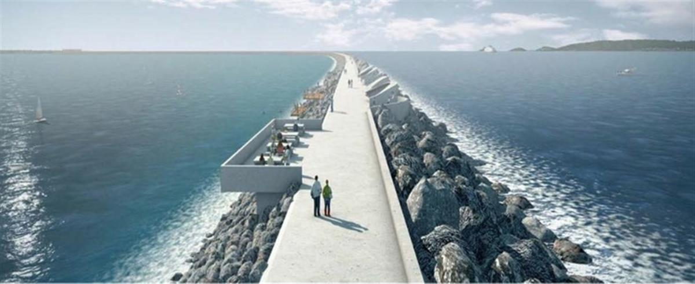
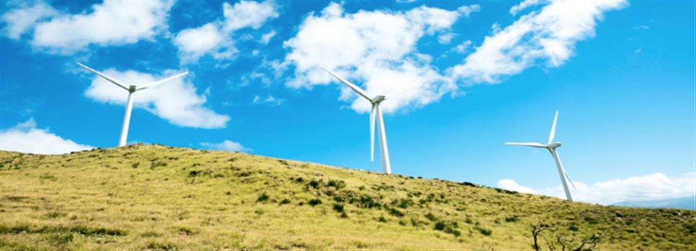

Hope for the Future supports anyone and everyone who is concerned about climate change to raise their local MP’s awareness of the issue.
About Hope for the Future
MP-constituent relationships are the bedrock of democracy and the vehicle for reflecting the views of the electorate, yet we know just how difficult it can be to engage politicians on climate change. We have over 4 years' experience in getting the very best out of your relationship with your MP.We know the ins and outs of working towards policy change from the bottom up and it is our mission to support climate campaigners, academics, faith communities, local groups, NGOs and individuals across the UK to have their voices heard on climate change.

An artist’s impression of Swansea Bay Tidal Lagoon image source: Tidal Lagoon Power
